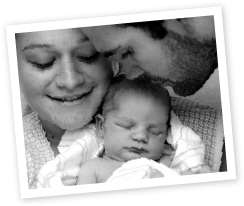
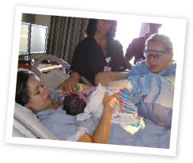

Our Goal
At Ancient CIty Midwives, we seek to provide women with gentle care that gives them confidence in their bodies. Don’t believe us? Ask our patients --- the stories below were submitted by women under our care. Do you have a story you’d like to share? Please, submit it via the button you see here!
-
 “Missy ... was a breath of fresh air every time we went in.”
Dec. 22 2010; I will never forget!! It was my 1st time meeting the BEST midwife in the world AND the 1st time I saw my lil sweet peanut. She is my 1st child and Missy made the whole experience not only exciting but unforgettable!! Missy and Margie (her mom:)) were a breath of fresh air everytime we went in and they were always there to greet us with a smile:) At the hospital Missy was there every step of the way...I remember thinking to myself “She really does care! How could I have done this with anyone else?” My Kinlee Jane was born August 12th 2011 and we have been to see Missy 5x!!! Only 2 were by appt.:) I love sharing stories with other people who I have met that have had just as wonderful things to say about Missy and her family!! WE LOVE ANCIENT CITY MIDWIVES!!:)
– Kacie, new mom
-
 “She truly cares about you and she is very professional.”
Having my last baby with Missy was a wonderfull experience compared to my first delivery. The best part about Missy is that she takes her time! She truly cares about you and she is very professional. Missy is not only my midwife she is also my friend and my boss. When I finished my medical assistant program I decided I wanted to do my externship with her and ended up working for her. Missy's sweet personality is always consistent, whether she's your friend, your midwife or your boss. Thanks Missy for taking such good care of my family, and I love being part of Ancient City Midwives!
– Jennifer, mother of 2
-
“We count ourselves blessed to have found Ancient City Midwives.”
We count ourselves blessed to have found Ancient City Midwives. Missy’s attentive and nurturing care and the kindness of all of her staff have made our two deliveries with them such beautiful experiences. They could not come more highly recommended!
– Brittany, mother of 3
-
“When my time came, I was so glad to have her in my delivery room!”
Missy was so gentle and caring throughout my second pregancy, I felt very confident going into my delivery. She took special care to talk through my fears and we prepared for every detail. When my time came, I was so glad to have her in my delivery room! To keep my on my monitor while I moved around to manage the contractions, I wound up slow dancing with Missy with my husband behind me pressing on my back --pretty amazing, she put me completely at ease despite the stressful situation :) Knowing Missy so well and her wonderful and patient ways made all the difference in the world. Thank you, Missy, for a beautiful, peaceful birth experience!
– Emily, mother of 2